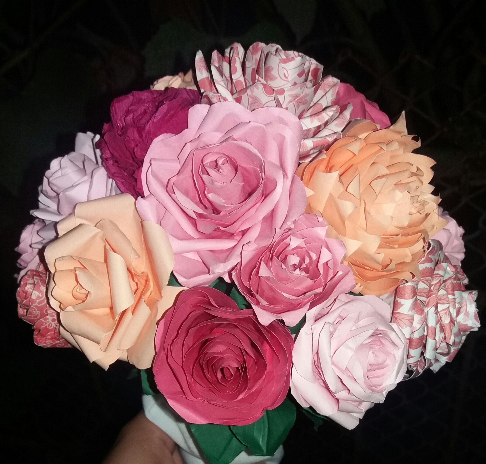

Buchete de flori din hartie
Buchetele de flori din hartie sunt ideale pentru mirese, cat si pentru a darui un cadou simplu(un trandafir), pentru ca rezista in timp.
Verde si Albastru

Buchet unicat, pentru cununia civila, albastru si verde.
Trandafiri din hartie, hand made.
Roz si Crem

Nuante de roz, crem, si hartie cu modele.
Primul buchet de trandafiri din hartie realizat.